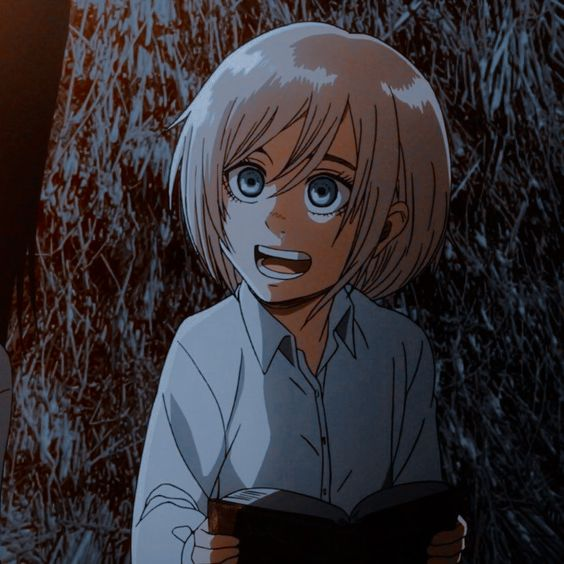

Anime Characters
-
Main Characters:
-
Eren Jeager:
The main protagonist of the series, Eren is a member of the Survey Corps and possesses the power of the Attack Titan. He is determined to protect his friends and eradicate the Titans. Eren is known for his strong will and determination to protect his friends and loved ones, as well as his intense hatred towards Titans. He possesses the ability to transform into a Titan, a power that he discovers early on in the series, which becomes a significant plot point throughout the story.
-
Mikasa Ackerman:
Mikasa is a highly skilled soldier and a member of the Survey Corps, specializing in close combat. She is known for her exceptional fighting abilities, quick reflexes, and remarkable physical strength. She is also highly intelligent, strategic, and disciplined, making her a valuable asset to the Survey Corps. Mikasa's character is defined by her fierce loyalty to Eren and her dedication to protecting him at all costs. Her past is shrouded in mystery, and she harbors a deep sense of trauma and loss, which is explored throughout the series. Mikasa's stoic and reserved nature often makes her come across as distant and unapproachable, but as the series progresses, her emotional depth and vulnerability are gradually revealed, endearing her to the audience. She has become a beloved and iconic character in the anime and manga community.
-
Armin Arlert:
Eren's childhood friend & fellow member of the Survet Corps.He is highly intelligent, analytical, and has an extensive knowledge of the world outside the walls. Armin's character is defined by his kindness, empathy, and strong moral compass. He is often the voice of reason and diplomacy within the Survey Corps, and his insight and intelligence are crucial to the group's success. Despite his lack of physical strength and combat skills, Armin's value to the Survey Corps is immeasurable, and his contribution to the story becomes increasingly significant as the series progresses. Armin is also known for his remarkable growth and development throughout the series, starting as a timid and insecure youth and eventually transforming into a confident and capable leader. He has become a beloved and respected character in the anime and manga community.
-
Levi Ackerman:
Levi is a skilled fighter and leader who is known for his exceptional combat abilities and strategic mind. He is often called "humanity's strongest soldier" and is highly respected and feared by both his allies and enemies. Levi's character is defined by his traumatic past, which has left him emotionally guarded and detached from others. Despite this, he has a strong sense of loyalty and is fiercely protective of his comrades, often putting himself in danger to keep them safe. Levi's backstory and relationships with other characters, particularly his former comrades in the Survey Corps, are explored throughout the series, revealing a complex and multi-faceted personality. Levi has become a fan favorite in the anime and manga community, admired for his strength, resilience, and unwavering commitment to protecting humanity from the Titans.
-

-
Erwin Smith:
Former Commander of the Survey Corps.Erwin is known for his exceptional leadership skills, strategic mind, and unwavering dedication to the cause of humanity. He is highly respected and revered by his subordinates, who see him as a beacon of hope and inspiration. Erwin's character is defined by his tragic past and his relentless pursuit of the truth about the Titans and the world outside the walls. He is driven by a desire to uncover the secrets of the Titans and to fulfill the mission of the Survey Corps, even if it means sacrificing his own life. Throughout the series, Erwin's leadership and tactical genius are crucial to the success of the Survey Corps, and his contributions to the story are significant. Erwin is also known for his complex and nuanced personality, with his motivations and actions often shrouded in mystery. He has become a fan favorite in the anime and manga community, admired for his strength, intelligence, and unwavering dedication to the cause of humanity.
-
Reiner Braun:
He is one of the main antagonists of the series and a former member of the Survey Corps. Reiner is a highly skilled warrior and possesses the ability to transform into a Titan, which he uses to carry out the mission of the Marleyan government. He is known for his physical strength, endurance, and tactical mind, making him a formidable opponent. Reiner's character is defined by his inner turmoil and conflicted loyalties. He struggles with his role in the mission to invade Paradis Island, as well as his relationship with his former comrades in the Survey Corps, whom he betrayed. Throughout the series, Reiner's motivations and actions are explored in depth, revealing a complex and multi-faceted personality. Despite being an antagonist, his backstory and struggles have earned him sympathy and understanding from some fans. Reiner's character is a key player in the overall story of "Attack on Titan," and his actions have far-reaching consequences for the main characters and the world they inhabit.
-
Bertholdt Hoover:
A former member of the Survey Corps who later revealed himself as the Colossal Titan,Bertholdt is quiet and reversed,often relying on Reiner to make decisions.Bertholdt's character is defined by his loyalty to the Marleyan government and his inner turmoil over his role in the mission to invade Paradis Island. He struggles with guilt and remorse over his actions, particularly his role in the attack on Wall Maria, which resulted in the deaths of countless innocent people. Throughout the series, Bertholdt's backstory and motivations are explored, revealing a complex and multi-faceted personality
-
Annie Leonhart:
A former member of the Survey Corps who later revealed herself as the Female Titan Annie is a skilled fighter and intelligent stategist.She is known for her exceptional hand-to-hand combat skills as well as her cold and detached personality.She struggles with guilt and remorse over her actions, particularly her involvement in the attack on Wall Maria.
-
Zeke Jeager:
Eren's half-brother and possessor of the Beast Titan,Zeke is a complex and enigmatic character with his own agenda.He is known for his strategic mind, as well as his cold and calculating personality. Zeke's character is defined by his loyalty to the Marleyan government and his belief in the Eldian Restorationists' ideology, which advocates for the sterilization of Eldians to end the cycle of violence perpetuated by the existence of Titans. He also has a complicated relationship with his half-brother Eren Yeager, with whom he shares the power of the Founding Titan. Throughout the series, Zeke's backstory and motivations are explored, revealing a complex and multi-faceted personality. He is shown to have a troubled past, with his actions motivated by a desire to end the suffering of Eldians and bring about a world free from the Titans.
- 
-
Historia Reiss:
Historia, also known as Krista Lenz, is the illegitimate daughter of the nobleman Rod Reiss and a woman from a lower class. She is known for her kind and gentle personality, as well as her selflessness and compassion towards others. Historia's character is defined by her complicated family history and her search for identity and purpose in life. She struggles with feelings of worthlessness and inferiority, as well as guilt over her role in the deaths of her fellow Survey Corps members during the Battle of Shiganshina. Historia's character is a key player in the overall story of "Attack on Titan," and her actions have far-reaching consequences for the main characters and the world they inhabit. Despite facing many challenges and setbacks, she remains a symbol of hope and resilience, inspiring others to stand up and fight for what is right.
-

-
Jean Kirschtein:
Jean is known for his sharp wit, practicality, and level-headedness in stressful situations. He is initially portrayed as being skeptical of Eren Yeager's abilities and the Survey Corps' mission, but later becomes a loyal member of the group. Jean's character is defined by his growth and development throughout the series. He starts off as a self-centered and pragmatic individual, but gradually learns the value of teamwork and selflessness. He is shown to have a strong sense of duty and responsibility, often putting himself in danger to protect others. He is shown to have a deep-seated fear of death, which motivates him to keep fighting even when the odds are against him.
-
Connie Springer:
Connie is known for his cheerful and optimistic personality, as well as his quick thinking and resourcefulness in combat situations. He is often seen cracking jokes and trying to lighten the mood, even in the face of danger. Connie's character is defined by his loyalty to his friends and his desire to protect them at all costs. He is shown to be deeply affected by the loss of his hometown and the people he grew up with, which motivates him to fight for a better future. Throughout the series, Connie's backstory and motivations are explored, revealing a complex and multi-faceted personality. He is shown to have a strong sense of justice and a desire to do what is right, even if it means going against authority or taking risks. Despite facing many challenges and setbacks, he remains a symbol of hope and determination, inspiring others to keep fighting for what they believe in.
-

-

-
Sasha Blouse:
Sasha is known for her love of food, her sharp senses, and her bravery in battle. She is often seen scavenging for food and has a talent for finding edible plants and animals, making her an important asset to the Survey Corps during expeditions. Throughout the series, Sasha's backstory and motivations are explored, revealing a complex and multi-faceted personality. She is shown to have a difficult childhood and a strained relationship with her father, which motivates her to prove herself as a capable soldier and earn his respect. Despite facing many challenges and setbacks, she remains a symbol of courage and determination, inspiring others to keep fighting for their beliefs. Tragically, Sasha meets an untimely end during the course of the story, but her impact on the other characters and the audience is still felt.
-
Hange Zoe:
Hange is known for her eccentricity, intelligence, and passion for studying Titans. She is the leading expert on Titans in the series and is responsible for many of the scientific discoveries made by the Survey Corps. Hange's character is defined by her unbridled curiosity and her desire to learn everything she can about Titans. She is shown to be a brilliant strategist and is often able to come up with unique and creative solutions to difficult problems. Despite facing many challenges and setbacks, she remains a symbol of determination and scientific inquiry, inspiring others to keep pushing the boundaries of knowledge and discovery.
-
Side Characters:
There are Many side characters in Attack on Titan each having a true influence on the whole plot and on the understanding the ideas the author wants to share through his anime.
Some of the side characters: Ymir ,Ymir Fritz,Darius Zackly,Keith Shadis, Marco Bott,Floch Forster,Mike Zacharius,Hitch Dreyse,Captain Kenny Ackerman , Rod Reiss,Grisha Yeager,Dina Fritz,Eren Kruger,Carla Yeager,Gabi Braun,and Falco Grice.